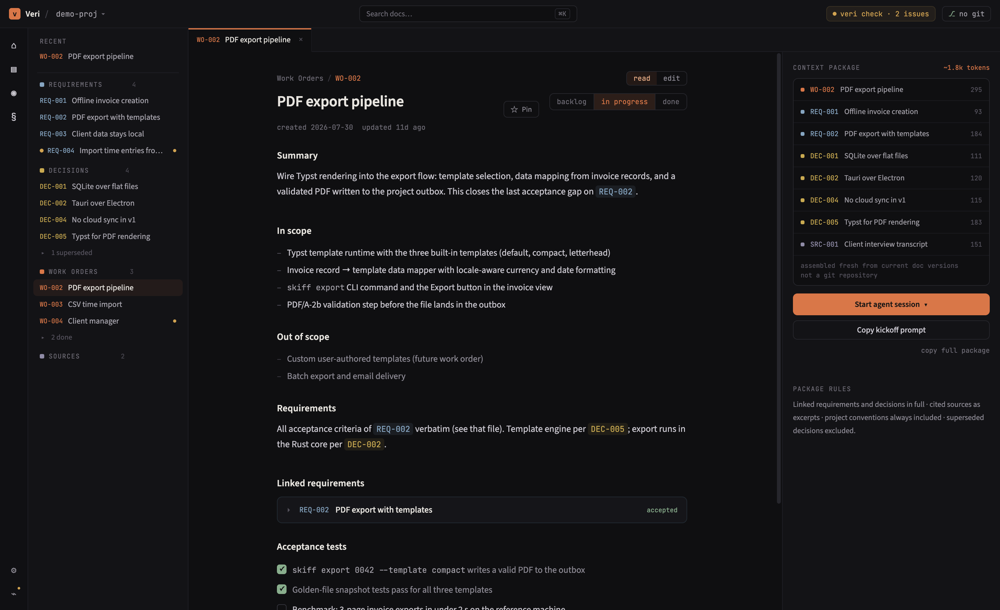
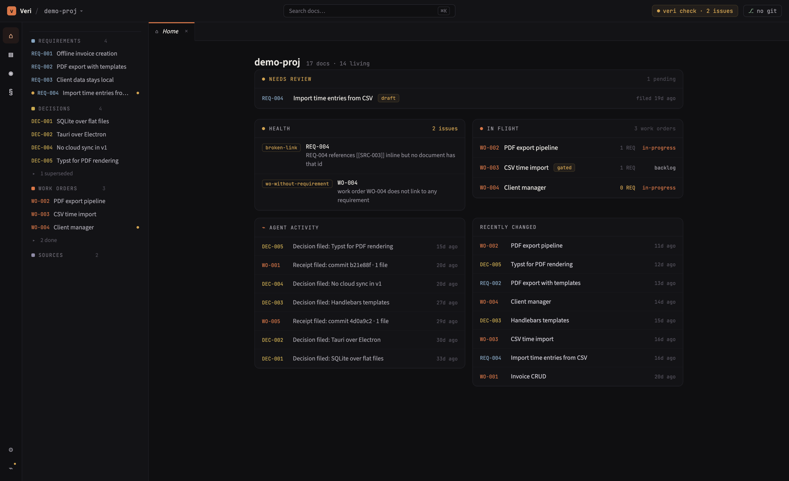

A knowledge base your coding agents read — requirements, decisions, and work orders as plain markdown files living in your repo.
For developers who work with coding agents and are tired of re-explaining the project every session. The context lives in files, not in chat scrollback.
Download Veri for macOSInstead of pasting background into a prompt, you describe work once as a document. Everything the task depends on — requirements, decisions, source material — is linked, and Veri assembles it into one scoped package your agent fetches over MCP.
A work order says what to deliver, what's in and out of scope, and which requirements it implements. Veri shows the exact context package an agent will receive — with per-document token costs.

Over MCP, get_context returns the work order plus every linked requirement, active decision, and source excerpt — and nothing else. Superseded decisions are named as already rejected so the agent doesn't relitigate them.
The agent files decisions it makes and a receipt for each work session — what commit, which files, one line of summary. Your home view shows the trail; git diff shows every word.

The package for a task is the documents linked to it — typically a few thousand tokens, assembled fresh from current file versions every time.
Choices are recorded with the alternatives they rejected, and ride into every future task they constrain. Agents stop re-opening what you settled in March.
Every document is a markdown file in your repo. Agent-written drafts wait for your approval; nothing becomes binding until you promote it.
The knowledge base is a veri/ directory of markdown files. Veri works entirely offline; git provides history and team sync.
The app collects nothing and phones nothing home. The only network access is a check against GitHub Releases for app updates.
Delete the app and your knowledge base is still a folder of readable markdown that renders on GitHub.